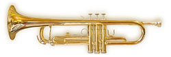

A trumpet is a musical instrument commonly used in classical and jazz
ensembles. The trumpet group contains the instruments with the highest register
in the brass family. Trumpet-like instruments have historically been used as
signaling devices in battle or hunting, with examples dating back to at least
1500 BC; they began to be used as musical instruments only in the late-14th or
early 15th century.
Trumpets are used in art music styles, for instance in
orchestras, concert bands, and jazz ensembles, as well as in popular music. They
are played by blowing air through almost-closed lips (called the player's
embouchure), producing a "buzzing" sound that starts a standing wave vibration
in the air column inside the instrument. Since the late 15th century they have
primarily been constructed of brass tubing, usually bent twice into a rounded
rectangular shape.
There are many distinct types of trumpet, with the most common being pitched in
B♭ (a transposing instrument), having a tubing length of about 1.48 m (4 ft 10
in).
Early trumpets did not provide means to change the length of tubing,
whereas modern instruments generally have three (or sometimes four) valves in
order to change their pitch. Most trumpets have valves of the piston type, while
some have the rotary type. The use of rotary-valved trumpets is more common in
orchestral settings, although this practice varies by country. Each valve, when
engaged, increases the length of tubing, lowering the pitch of the instrument.
A musician who plays the trumpet is called a trumpet player or trumpeter.

The earliest trumpets date back to 1500 BC and earlier. The bronze and silver
trumpets from Tutankhamun's grave in Egypt, bronze lurs from Scandinavia, and
metal trumpets from China date back to this period.
Trumpets from the Oxus
civilization (3rd millennium BC) of Central Asia have decorated swellings in the
middle, yet are made out of one sheet of metal, which is considered a technical
wonder.
The Shofar, made from a ram horn and the Hatzotzeroth, made of metal, are both
mentioned in the Bible. They were played in Solomon's Temple around 3000 years
ago.
They were said to be used to blow down the walls of Jericho. They are still
used on certain religious days.The Salpinx was a straight trumpet 62 inches
long, made of bone or bronze. Salpinx contests were a part of the original
Olympic Games.
The Moche people of ancient Peru depicted trumpets in their art going back to
300 AD.[6] The earliest trumpets were signaling instruments used for military or
religious purposes, rather than music in the modern sense; and the modern bugle
continues this signaling tradition.
Reproduction baroque trumpet by Michael Laird:
Improvements to instrument design and metal making in the late Middle Ages and
Renaissance led to an increased usefulness of the trumpet as a musical
instrument. The natural trumpets of this era consisted of a single coiled tube
without valves and therefore could only produce the notes of a single overtone
series.
Changing keys required the player to change crooks of the instrument.
The development of the upper, "clarino" register by specialist
trumpeters—notably Cesare Bendinelli—would lend itself well to the Baroque era,
also known as the "Golden Age of the natural trumpet." During this period, a
vast body of music was written for virtuoso trumpeters.
The art was revived in
the mid-20th century and natural trumpet playing is again a thriving art around
the world. Many modern players in Germany and the UK who perform Baroque music
use a version of the natural trumpet fitted with three or four vent holes to aid
in correcting out-of-tune notes in the harmonic series.
The melody-dominated homophony of the classical and romantic periods relegated
the trumpet to a secondary role by most major composers owing to the limitations
of the natural trumpet. Berlioz wrote in 1844
Notwithstanding the real loftiness and distinguished nature of its quality of
tone, there are few instruments that have been more degraded (than the trumpet).
Down to Beethoven and Weber, every composer not excepting Mozart persisted in
confining it to the unworthy function of filling up, or in causing it to sound
two or three commonplace rhythmical formulae.
The attempt to give the trumpet more chromatic freedom in its range saw the
development of the keyed trumpet, but this was a largely unsuccessful venture
due to the poor quality of its sound.
Although the impetus for a tubular valve began as early as 1793, it was not
until 1818 that Friedrich Bluhmel and Heinrich Stölzel made a joint patent
application for the box valve as manufactured by W. Schuster.
The symphonies of
Mozart, Beethoven, and as late as Brahms, were still played on natural trumpets.
Crooks and shanks (removable tubing of various lengths) as opposed to keys or
valves were standard, notably in France, into the first part of the 20th
century.
As a consequence of this late development of the instrument's chromatic
ability, the repertoire for the instrument is relatively small compared to other
instruments. The 20th century saw an explosion in the amount and variety of
music written for the trumpet